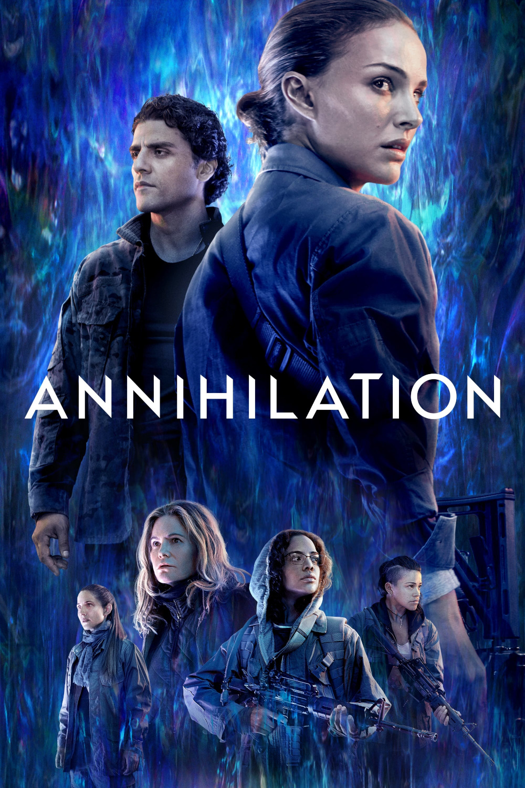

Мировая премьера: 23 февраля 2018
Слоган: Один вход. Выхода нет.
Сюжет: Биолог и бывший солдат Лина потрясена, когда её пропавший муж возвращается домой в предсмертном состоянии после сверхсекретной экспедиции в "Мерцание" – загадочную изолированную зону, из которой ещё никто не возвращался. Теперь Лина и её элитная команда должны отправиться в прекрасный беспощадный мир мутировавших пейзажей и существ, чтобы узнать, как остановить их разрастание, угрожающее жизни на Земле.
Режиссёр: Алекс Гарленд
В основе: Роман Джеффа Вандермеера "Аннигиляция" (США, 2014)
В ролях:
| Натали Портман | Лина |
| Дженнифер Джейсон Ли | Доктор Вентресс |
| Джина Родригес | Аня Торенсен |
| Оскар Айзек | Сержант Кейн |
| Тесса Томпсон | Джози Рэдек |
| Тува Новотны | Кэсс Шеппард |
| Бенедикт Вонг | Ломакс |
| Дэвид Гяси | Дэн |
| Соноя Мизуно | Кейси / Гуманоид |
Бюджет: $ 40 млн.
Кассовые сборы в США: $ 33 млн.
Кассовые сборы в мире: $ 43 млн.
Продолжительность: 1 ч. 49 мин.
Рейтинг: 6.8